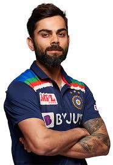
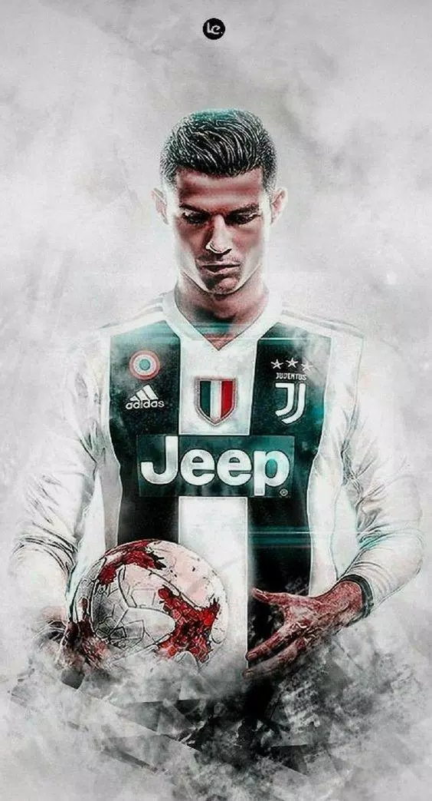

virat kohli

- Kohli is considered one of the best batsmen in the world and currently captains the Indian national cricket team. ∇∇∇∇∇∇∇∇
- He S ters selected for the nation's A+ contracts, which guarantee an annual salary of $1 million in 2020 ∇∇∇∇∇∇∇∇
- The global megastar has 134 million followers on Twitter, Facebook and Instagram, and is married to Bollywood actress Anushka Sharma ∇∇∇∇∇∇∇∇
- His fame helps him earn more than $20 million annually from endorsement partners like Audi, Hero, MRF, Puma, Valvoline and more
Cristiano Ronaldo

- Ronaldo was nicknamed “cry-baby” as a child. His mother Dolores Aveiro said: “When he got home from school I’d tell him to do homework but he'd say he didn’t have any. I'd be making dinner and he would jump out of the window and run off until late. He used to cry when he passed and his friends didn't score. People called him 'cry-baby' and 'Little Bee' because of nobody could catch him." ∇∇∇∇∇∇∇∇
- Ronaldo was popular with other students at the school, but he was expelled at the age of 14 after he threw a chair at his teacher. Ronaldo said the reason he did it was that the teacher disrespected him. Despite it being a negative thing, it turned into a great turning point in his life. His mother then encouraged him to focus all his attention on soccer which he did and turned him into an international sensation. ∇∇∇∇∇∇∇∇
- His first professional game for Sporting Lisbon came when he plays in the "Portuguese Super League" match at the age of 17 and that was the start of a journey which will make him one of the greatest players ever. ∇∇∇∇∇∇∇∇
- In 2008, a year after signing a five-year, £31 million contract, Ronaldo set a franchise record for goals scored (42) and earned himself the FIFA World of the Year honor.
Lionel Andrés Messi
.jpg)
- His full name is Luis Lionel Andres Messi. ∇∇∇∇∇∇∇∇
- He was born on June 24, 1987 in Rosario, Argentina. ∇∇∇∇∇∇∇∇
- Messi’s father, Jorge, was a steelworker and coach of the local youth football team. ∇∇∇∇∇∇∇∇
- Messi had growth hormone deficiency, which was stopping his normal growth rate at a tender age of 11. Most importantly, his parents couldn’t afford his treatment of per month.